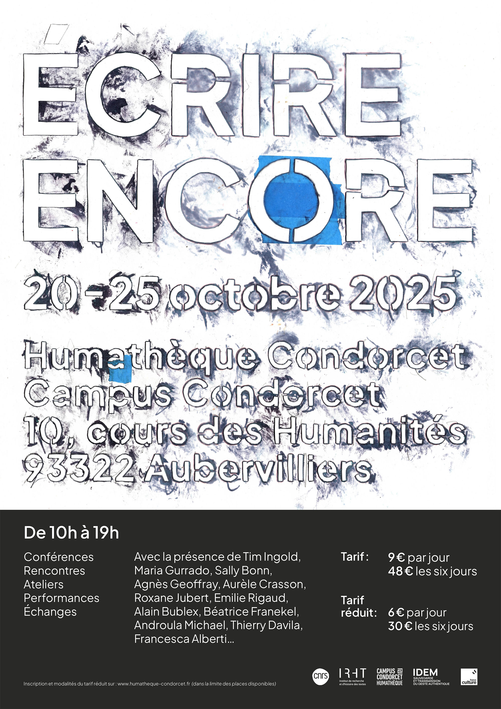
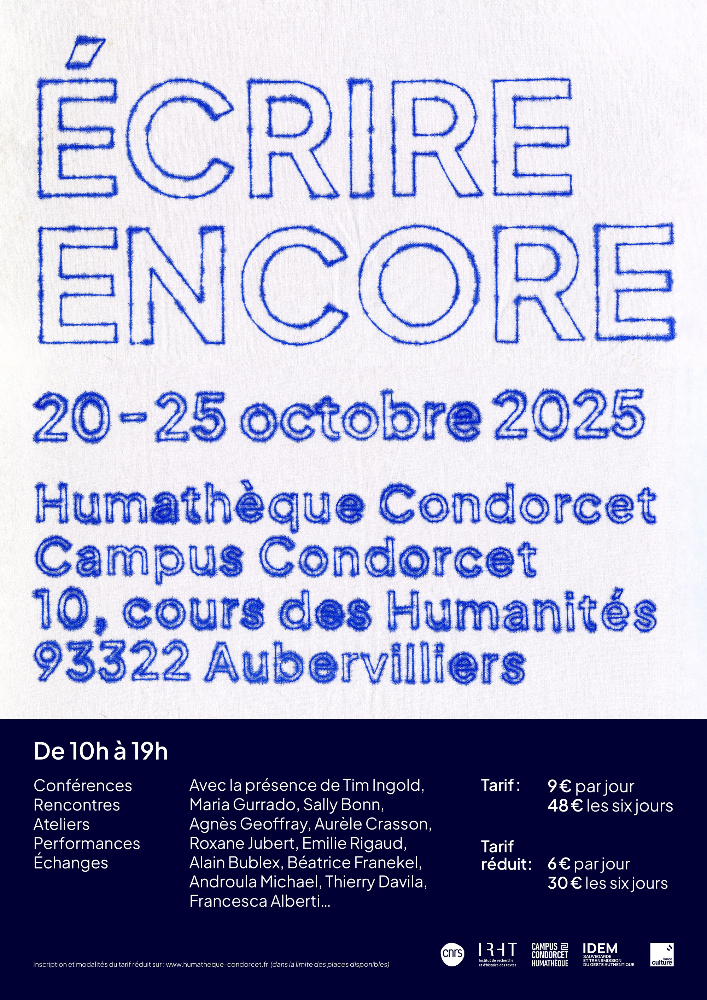
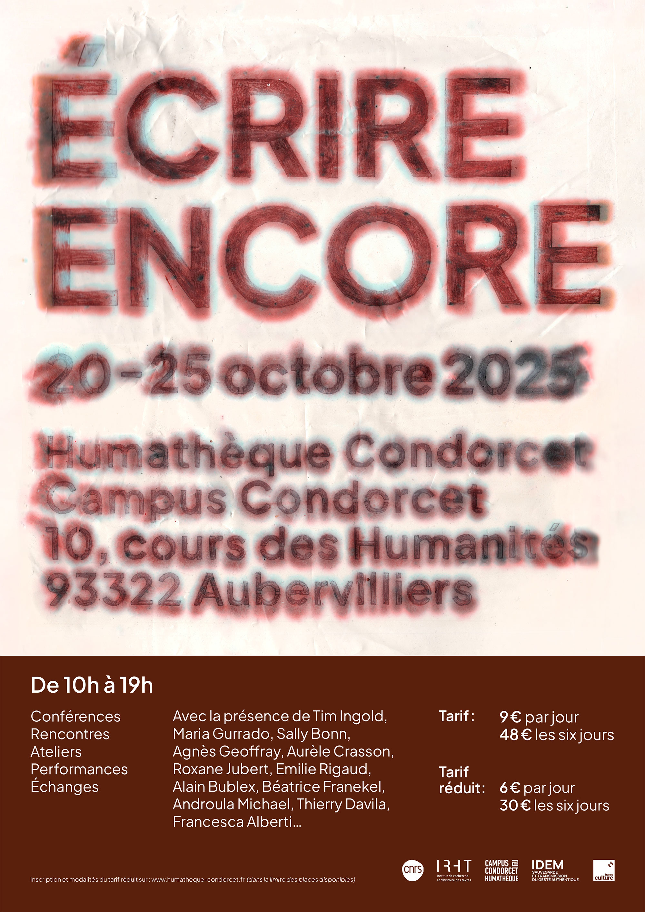
2024-2025
L’acte d’écriture implique le geste d’un corps, qui, par la rencontre
avec l’outil puis la surface, donne
naissance à une trace. Ainsi, l’écriture n’existe pas sans le geste, ils sont intimement liés puisque c’est dans
ce(s) geste(s) que se trouve sa richesse, ses possibilités.
Guidé par ma pratique personnelle de l’écriture manuscrite en tant qu’acte graphique et scriptural,
mais aussi par ma sensibilité pour les objets manuscrits
tels que les brouillons d’écrivains, ce fut pour moi une évidence d’investir
ce sujet dans le cadre de mon
mémoire. Seulement, la pratique de l’écriture
a considérablement évolué avec l’utilisation du numérique et
plus particulièrement des logiciels de traitement de texte, d’où l’apparition d’une nouvelle
conception de
l’écriture considérée comme un art de composition verbale plutôt
que d’inscription manuelle (Tim Ingold
dans son livre Une brève histoire
des lignes (2011)). Il faut envisager une recherche capable de remettre au
centre l’engagement du corps dans l’inscription afin d’aller vers un graphisme qui porte au devant la
présence de l’humain, quitte à tendre vers le subjectif.
Ma problématique est la suivante : Dans quelle mesure le design graphique
peut-il activer la corporéité de l’écriture manuscrite ?
Mon projet de diplôme m'a permis de démontrer comment le design graphique
peut activer la corporéité de l'écriture manuscrite. Je l'ai révélée non plus comme une
trace linéaire, mais comme une présence vivante, matérielle et spatiale.
Cette approche offre
des pistes nouvelles et riches en design graphique pour une réappropriation du geste face à la
dématérialisation de l'acte d'écriture, tout en innovant et en créant des passerelles essentielles
entre l'héritage de ce geste et les défis posés par l'omniprésence du numérique aujourd’hui.
PROJET FINAL - Écrire encore
Pour terminer et afin de concrétiser l’ensemble de ma recherche, j’ai imaginé l’évènement «Écrire encore». Ce projet vise à accueillir plusieurs types de manifestations culturelles, ainsi qu'un atelier de recherche collective que j'ai intitulé «Du geste à la trace, entre lettrage et typographie».
L’évènement est organisé par l’IRHT, une unité de recherche du CNRS. J’ai fait le choix d’ancrer mon évènement dans cet environnement afin de créer une passerelle entre leur recherche scientifique / historique et ma recherche graphique, qui devient collective grâce à l’atelier. Avec aussi pour intention d’ouvrir une porte au grand public sur ce milieu plutôt hermétique. Je me suis orienté vers ce type de structures aussi car j’ai pu rencontrer à deux reprises la paléographe Maria Gurrado de l’IRHT. Elle est à l’initiative du projet IDEM qui vise à sauvegarder les techniques d’écriture en numérisant le geste, j’ai d’ailleurs placé ce projet en partenaire de l’évènement.
J'ai conçu une série de supports de communication print et web, chacun décliné en trois visuels distincts.
Pour garantir une identité visuelle harmonieuse,
j'ai conservé la même typographie et le même code couleur
sur l’ensemble de l'identité. Le texte est invariant mais sa mise en forme change.
Détails des objets réalisés pour la conception des supports.
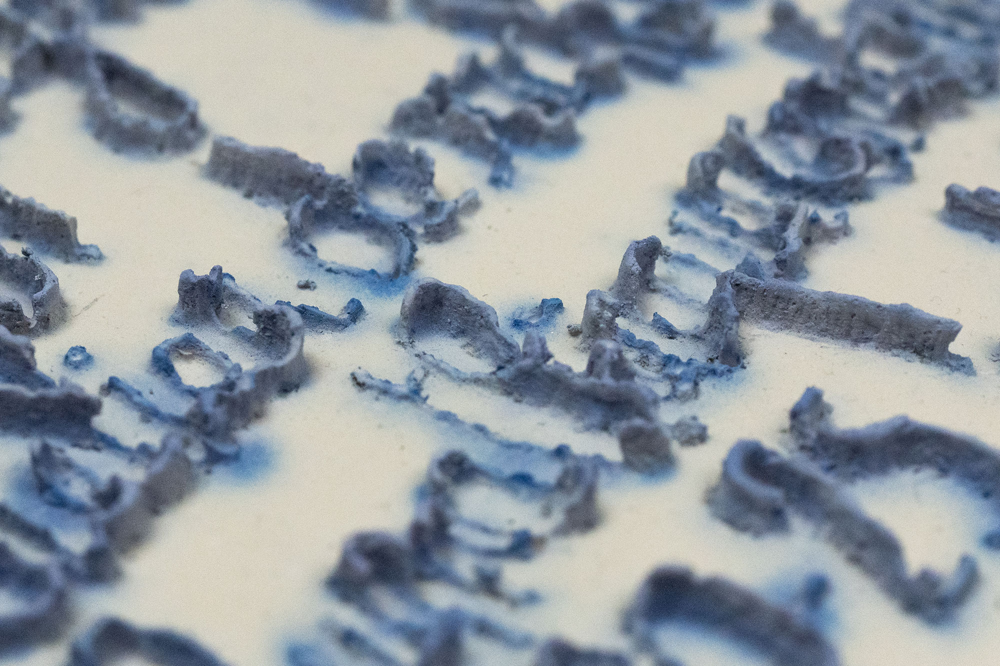
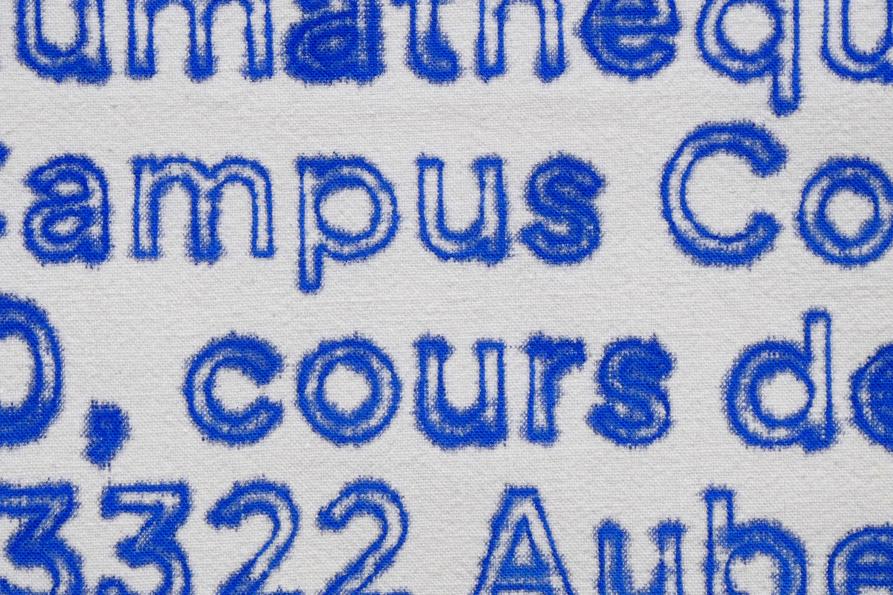
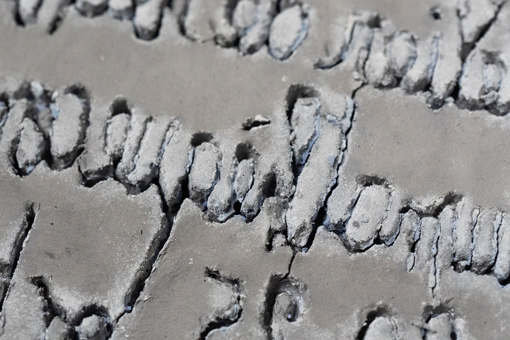
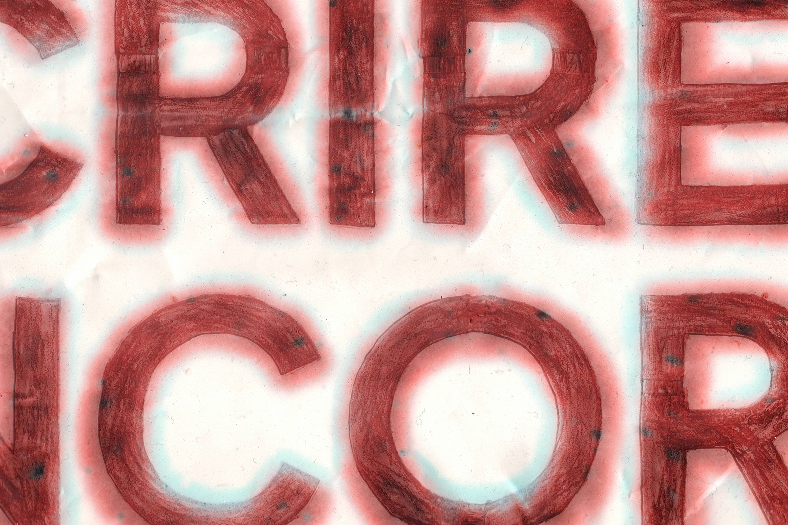
Pour les supports d’«Écrire encore», j'ai particulièrement voulu mettre en avant cette démarche de faire des allers-retours entre la typographie et une pratique manuelle afin d’y intégrer une matérialité et un caractère vivant. La notion de temporalité est également très présente dans ces visuels. Elle se manifeste d'une part, dans la réalisation même des visuels, qui montrent la diffusion de l'encre dans la matière ; d'autre part, dans le processus créatif en révélant par exemple l'outil pochoir qui m'a servi à créer les deux autres déclinaisons.



Brochures pour l'événement «Écrire encore»
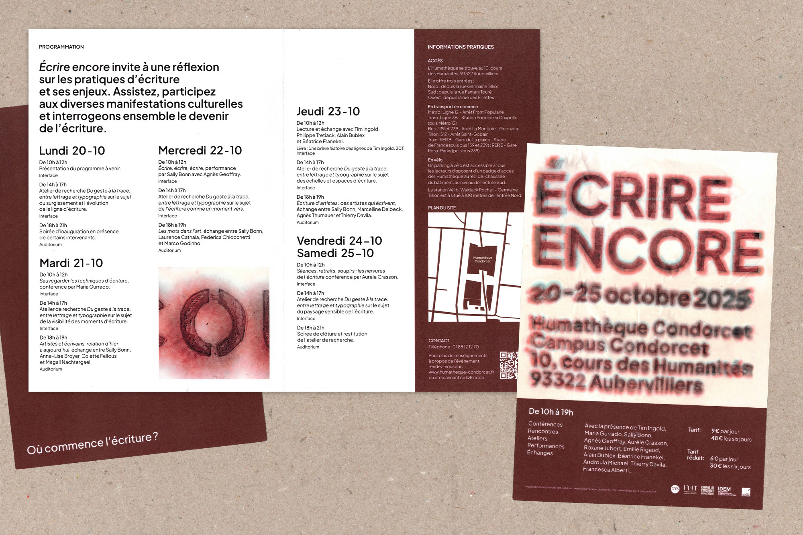
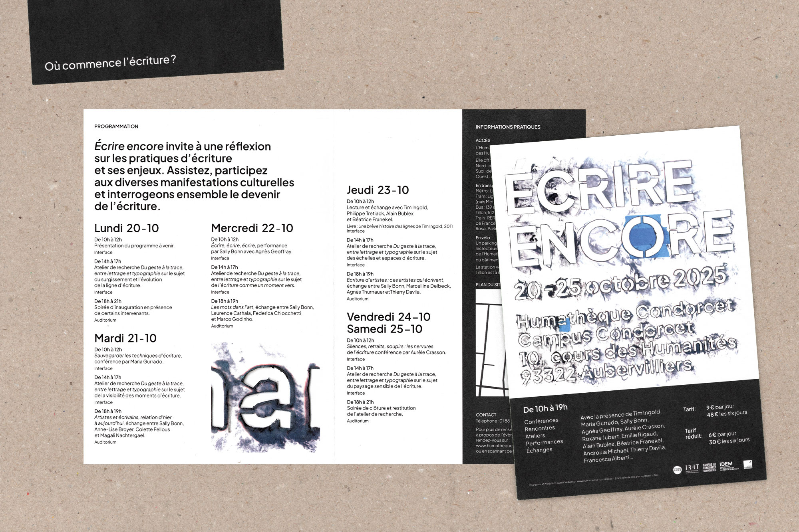
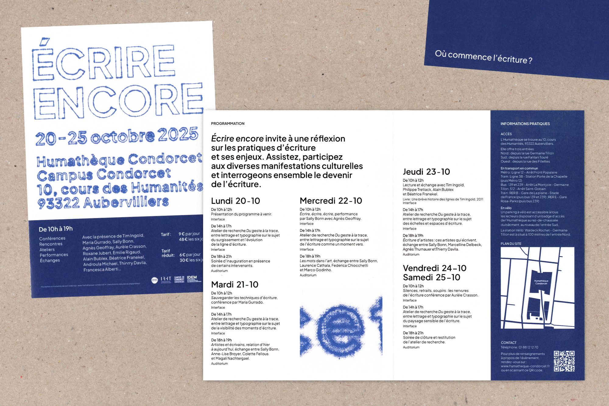
Ensuite, pour les supports de l'atelier de recherche, mon intention était de mettre en lumière le paysage et le corps de l'écriture tels qu'ils sont tracés par la main dans la matière. Pour ce faire, j'ai utilisé les scans 3D du geste tracké des objets en argile et en plâtre, qui selon moi donnent à voir l’écriture sous un angle nouveau de par leurs textures et tridimensionnalité. Les supports mettent également en évidence le protocole créatif en trois temps de la réalisation des moulages en plâtre. Enfin, c'est dans la matérialité de ces visuels et leur mise en perspective spatiale dans la page que se manifeste la présence du corps.
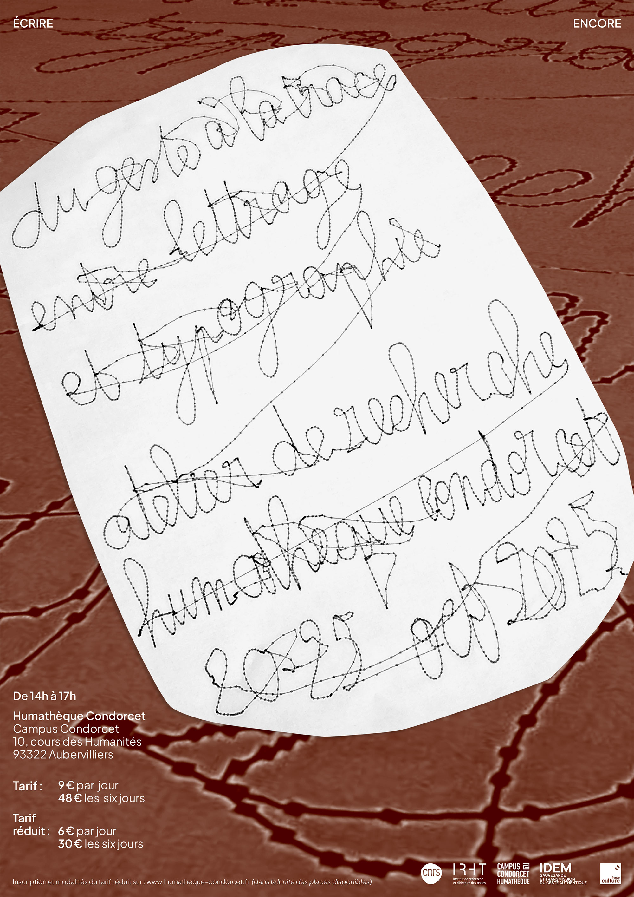
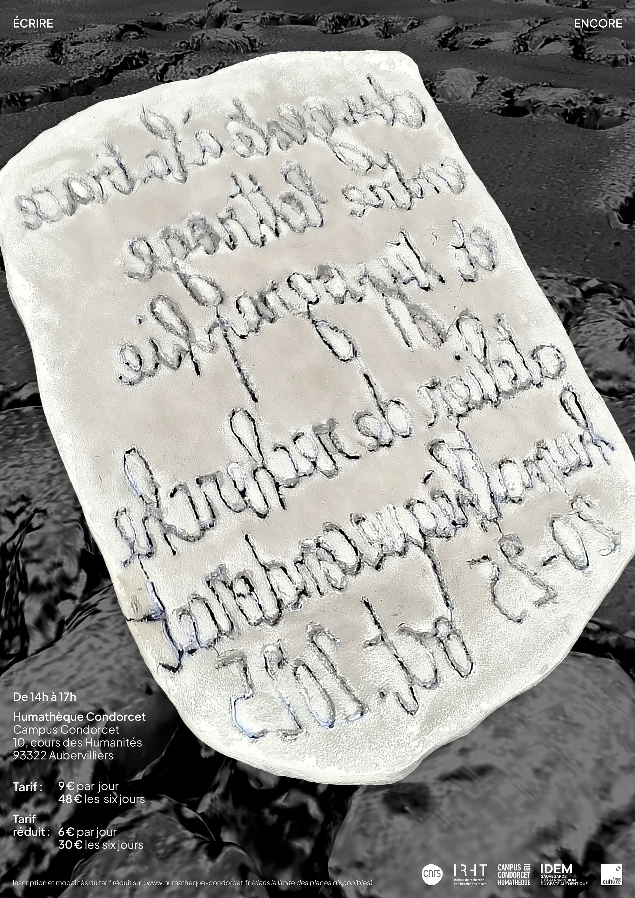
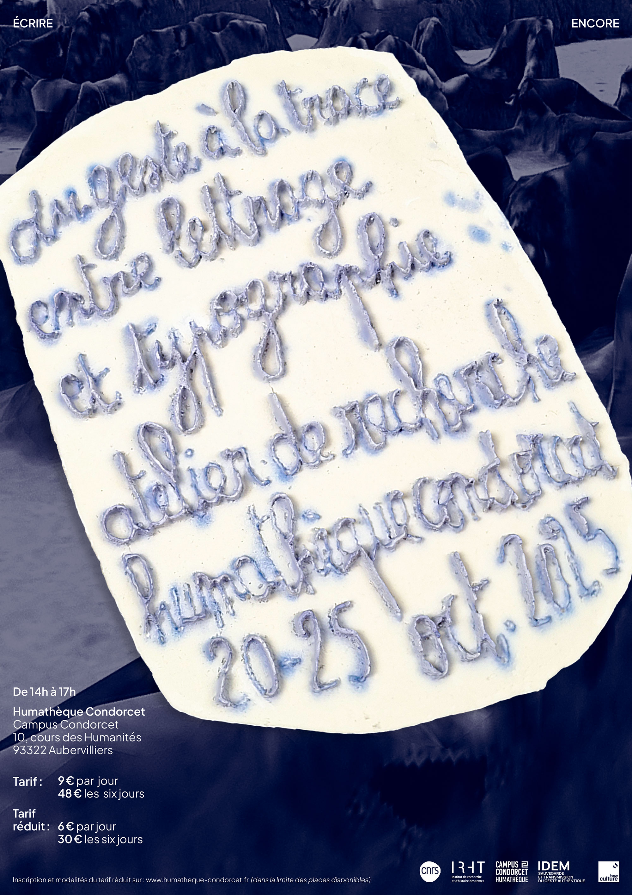
Flyers pour l'atelier «Du geste à la trace, entre lettrage et typographie»
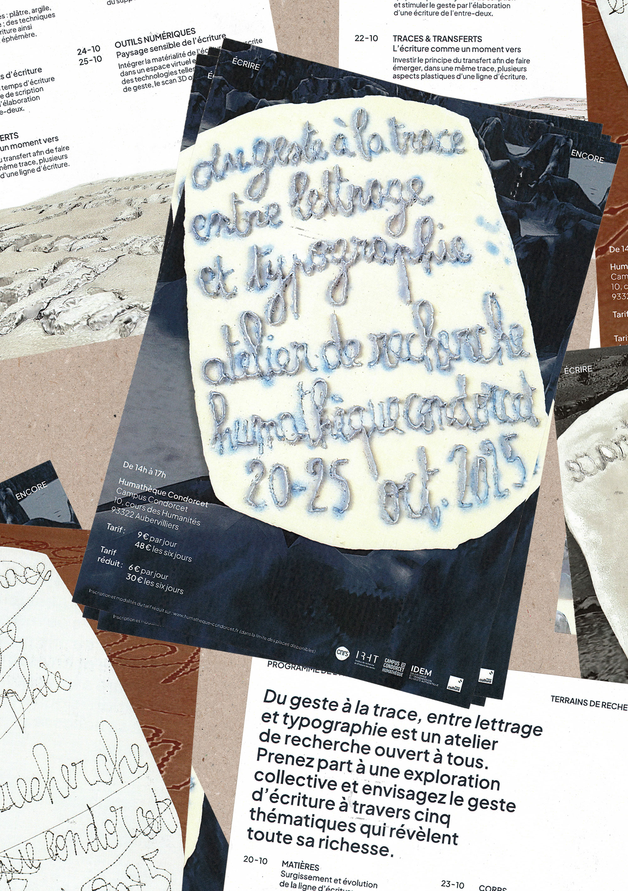
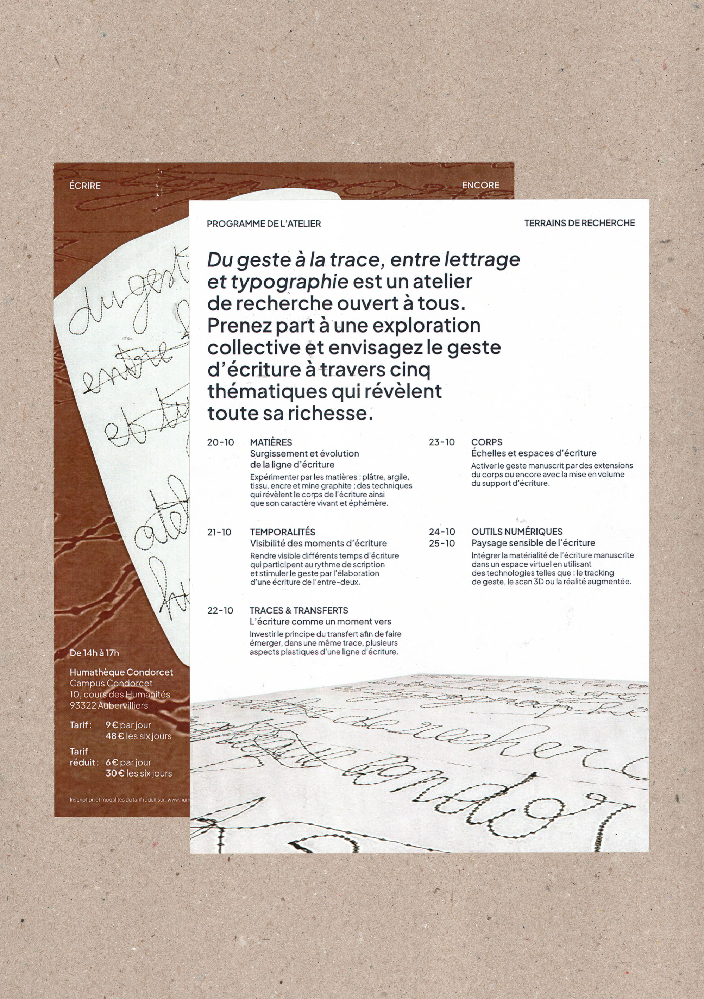
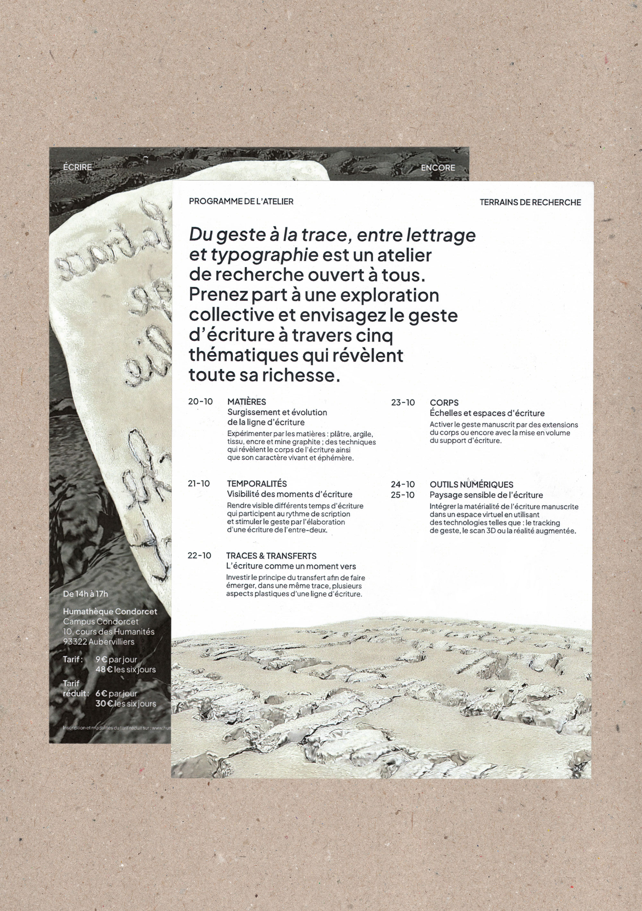
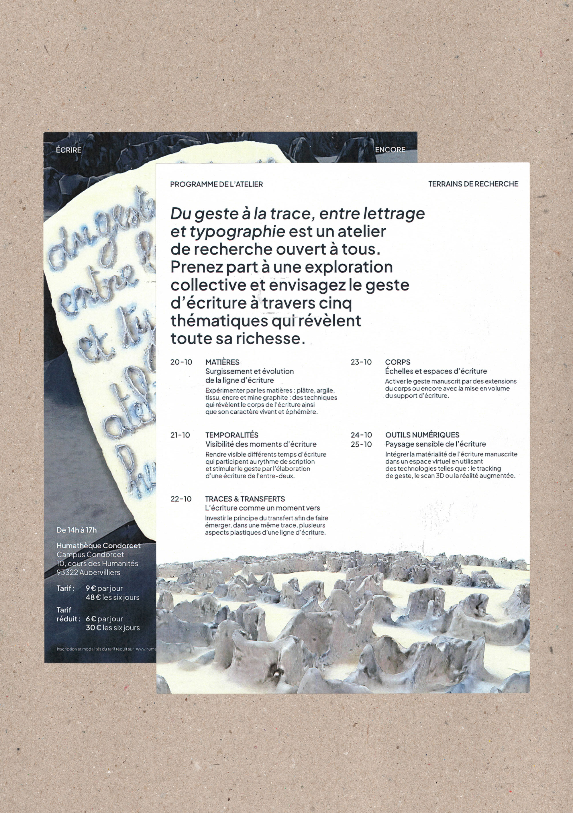
Stories et publications Instagram pour l'atelier «Du geste à la trace,
entre lettrage et typographie»